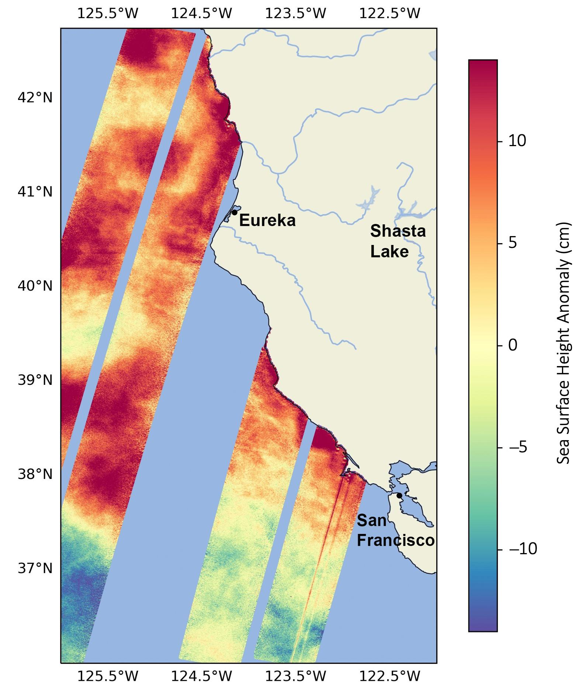

SWOT / KaRIn & S3NG / SAOOH
Earth-observation work combining SWOT/KaRIn spectral analysis and scientific visualisation with processing-chain development and performance simulations for Sentinel-3 Next Generation.

Spectral analysis and observation visualisation
As part of my work at Collecte Localisation Satellite (CLS), I contributed to the analysis of SWOT KaRIn observations, with a particular focus on Sea Surface Height (SSH) spectra and the study of long ocean-wave signatures.
I adapted an existing spectral-processing code to account for wave orientation when producing KaRIn SSH spectra. This made it possible to analyse the spectral signatures in a way that better reflected the geometry and propagation direction of the observed waves.
In order to compare KaRIn measurements with Sentinel-1 swell observations, I visualized the relevant SWOT/KaRIn ground tracks and selected the passes intersecting the regions and time periods of interest. This helped identify the most promising KaRIn measurements for analysing long-wave signatures.
Processing-chain development and performance simulations
In parallel, I contributed to the development and performance assessment of the SAOOH altimetry processing chain for Sentinel-3 Next Generation (S3NG), including studies for oceanic and hydrological observation modes.
For hydrology applications, I generated synthetic scenes representing simplified water bodies with circular geometries and controlled parameters. These scenarios were used to test the behaviour of the processing chain under different observation conditions.
The simulations were used to evaluate how well water surfaces could be identified and how accurately their elevations could be reconstructed, while studying the influence of scene geometry, land/water contrast and surrounding surface characteristics.
This work was part of a broader set of parametric studies and simulation workflows designed to characterize the expected performance of the future S3NG altimetry system and support validation of its processing approach.
From satellite measurements to validated data products
Although the SWOT and S3NG activities addressed different instruments and scientific questions, they shared a common methodology: adapting scientific software, generating and analysing controlled datasets, visualising satellite observations, and evaluating the reliability of processing chains before their use for scientific applications.